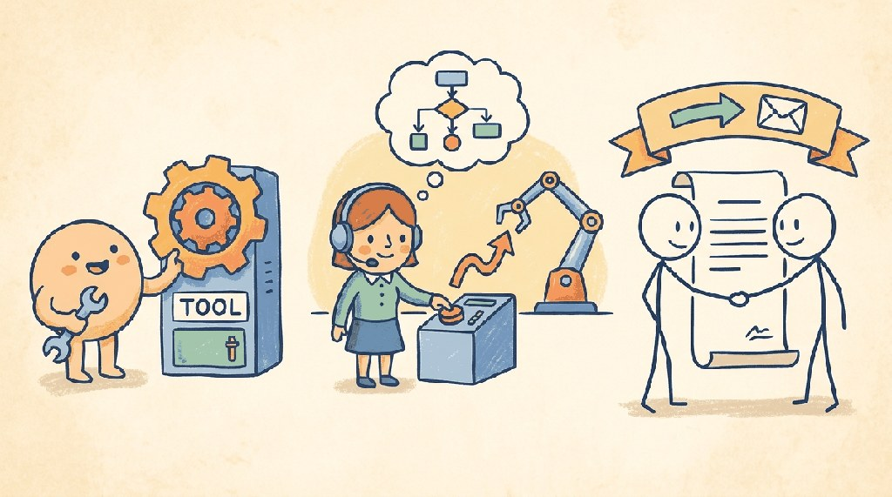

"Give me a lever long enough and a fulcrum on which to place it, and I shall move the world."
Pip, Tool-Calling AI Agent
An agent loop (Chapter 26) needs tools. This chapter is the canonical home for function calling: JSON schema mechanics, error handling, parallel tool calls, the Model Context Protocol (MCP), and the A2A protocols that let agents talk to each other. By the end you can wire any agent up to any tool, and you understand what 2025 settled about how agents should expose capabilities.
Chapter Overview
In November 2024, Anthropic released the Model Context Protocol (MCP) and within six months it had eaten the agent tooling stack: OpenAI shipped MCP support, Google followed, and the open-source community wrote MCP servers for everything from Postgres to Spotify. Function calling went from a per-vendor curiosity to a portable plug-in standard in less than a year. This chapter is the canonical guide to how an LLM actually invokes a tool: the JSON-schema mechanics, the parallel-call patterns, MCP's client-server architecture, and the A2A protocol that lets agents call each other.
You will learn to design tool schemas with proper parameter validation, build and deploy MCP servers that expose tools and resources to LLM-powered agents, implement inter-agent communication using A2A Agent Cards and task lifecycle management, and combine retrieval-augmented generation with agentic tool use for knowledge-grounded agents. The chapter emphasizes production-quality tool design with input validation, error handling, rate limiting, and security controls.
Agents become truly powerful when they can call external tools: APIs, databases, code interpreters, and more. This chapter covers function calling, tool protocols like MCP, and structured output formats that enable reliable tool use. These capabilities are prerequisites for the multi-agent systems in Chapter 28 and the specialized agents in Chapter 29.
- Implement function calling across major providers (OpenAI, Anthropic, Google) with proper schema design and parameter validation
- Build and deploy MCP servers that expose tools, resources, and prompts to LLM-powered agents
- Explain the A2A protocol lifecycle and design inter-agent communication using Agent Cards and task management
- Design production-quality custom tools with input validation, error handling, rate limiting, and security controls
- Combine retrieval-augmented generation with agentic tool use to build self-reflective, knowledge-grounded agents
Prerequisites
- Chapter 11: LLM APIs (chat completions, message formatting, structured outputs)
- Chapter 26: AI Agent Foundations (ReAct loop, planning patterns, agent architectures)
- Familiarity with retrieval-augmented generation (vector search, chunking, retrieval pipelines), covered in detail later in the book
- Experience with REST APIs, JSON Schema, and basic Python async programming
Sections
- 27.1 Function Calling Across Providers Function calling is the bridge between language and action. Entry
- 27.2 Model Context Protocol (MCP) MCP is USB for AI: a universal protocol that lets any agent connect to any data source or tool. Entry
- 27.3 Agent-to-Agent Protocol (A2A) If MCP connects agents to tools, A2A connects agents to each other. Intermediate
- 27.4 Custom Tool Design: Validation, Error Handling & Security The quality of your tools determines the quality of your agent. Intermediate
- 27.5 Retrieval as a Tool Call The agent-tool-use lens on retrieval: schema design, when to retrieve, and structured error handling. (RAG architecture lives in Section 32.2.) Advanced
- 27.6 Efficient Multi-Tool Orchestration and Tool Economy Token-efficient tool calling, tool routing, caching, parallel execution, economic models, and benchmarking tool efficiency. Advanced
Objective
Implement the Model Context Protocol from the server side. You will write a small MCP server in Python that exposes one tool (read-only file search over a directory), register it with Claude Desktop, and watch the model call it autonomously. By the end you will understand why MCP became the 2025 de-facto standard.
Steps
- Step 1: Install the SDK.
pip install mcp. Createfile_search_server.py. Use the FastMCP decorator pattern:@mcp.tool() def file_search(directory: str, pattern: str) -> list[str]: .... - Step 2: Implement the tool. Use
pathlib.Path.rglob(pattern), return up to 50 matching paths as strings. Restrictdirectoryto a single allowlisted root (e.g.,~/docs/) to prevent abuse. - Step 3: Run via stdio. Launch with
mcp.run(transport="stdio"). Test locally withnpx @modelcontextprotocol/inspector python file_search_server.py. - Step 4: Register with Claude Desktop. Edit
~/Library/Application Support/Claude/claude_desktop_config.json(Mac) or%APPDATA%\Claude\claude_desktop_config.json(Windows). Add your server undermcpServers. Restart Claude Desktop; you should see the tool listed. - Step 5: Use it. Ask Claude: "Search my docs folder for files mentioning 'transformers'." Confirm it calls your tool and uses the result. Inspect logs.
- Step 6: Add a resource. Extend the server with a
@mcp.resource()that returns the contents of a specific file. Now Claude can both search and read. Compare to a hand-rolled tool-call loop: MCP gave you discoverability for free.
Expected Output
Expected time: 2 to 3 hours. Difficulty: intermediate. Artifact: a working MCP server registered in Claude Desktop.
What's Next?
Next: Chapter 28: Multi-Agent Systems. One agent + tools is powerful. Many agents talking to each other can be greater than the sum, or worse if you design them wrong. Chapter 28 covers orchestration patterns (supervisor, swarm, hierarchical), handoff protocols, shared memory, debate-and-critique loops, and the brutal testing problem (how do you unit-test a system whose behaviour depends on the trajectory of 5 LLM calls in sequence?).